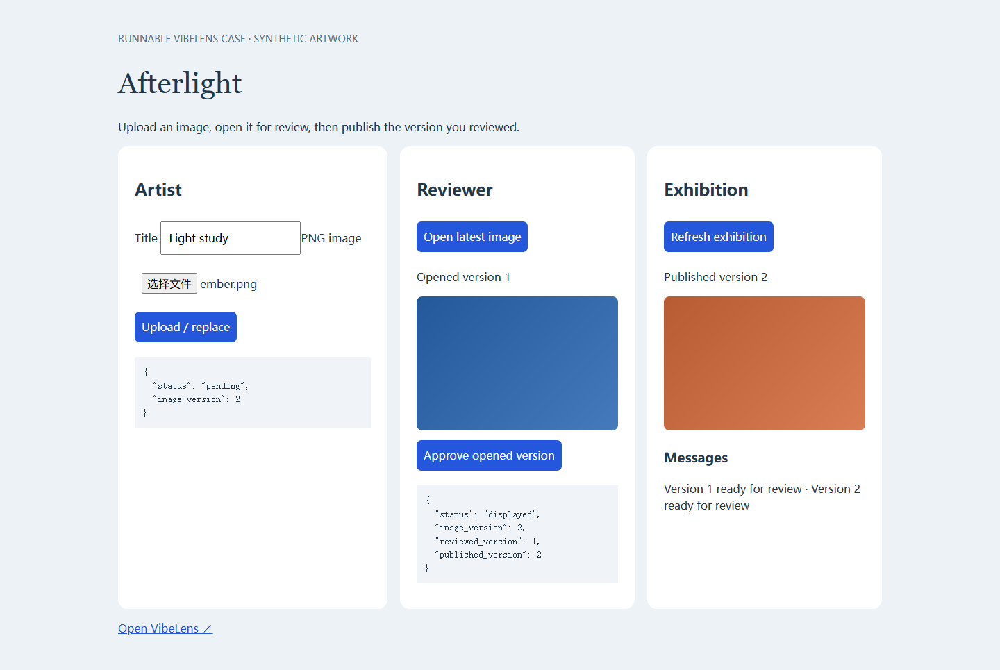
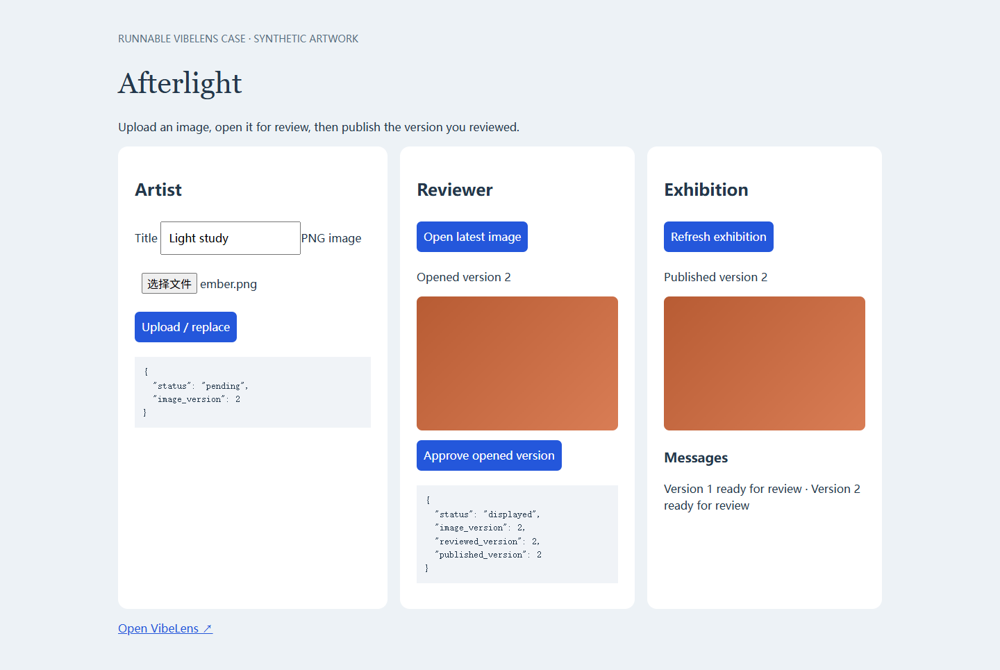

One request, eight connected layers.
Follow approval from the API into the business flow, state, rule, selected values, database operation, tables and source. Use the layer shortcuts above, expand nodes, then open source from a node’s menu.
AFTERLIGHT · A RECORDED DEBUGGING STORY
The upload works. The approval works. Together, they publish the wrong version. Follow the request through eight layers to see why—and watch the repair hold.
Recorded from a runnable browser + Python + SQLite project. The first version contains a deliberately seeded defect; the dialogue is a scripted example. The graph and values below come from actual executions.
Follow approval from the API into the business flow, state, rule, selected values, database operation, tables and source. Use the layer shortcuts above, expand nodes, then open source from a node’s menu.
The rule now compares the version opened for review with the current version. The request, state and database write remain connected to the same graph identities.


The recording puts the two versions side by side. The source shows the missing comparison. The next run shows whether the change worked. Bring that same view into your next coding conversation.
Try the small recording practiceRead the dialogue, test results and screenshots ↗Execution receipt ↗